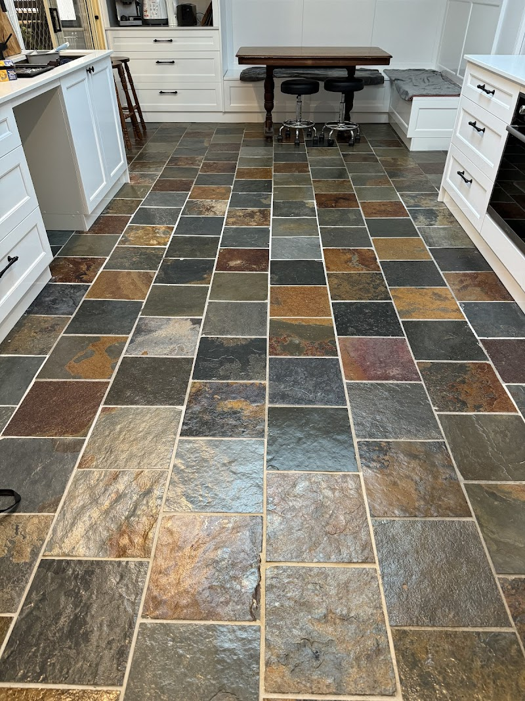
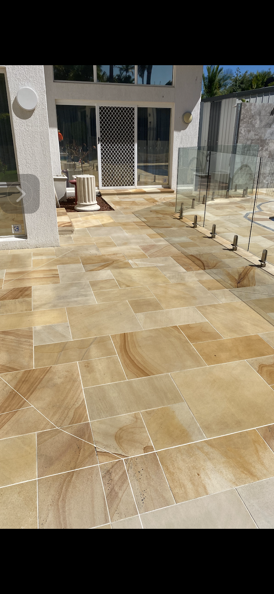
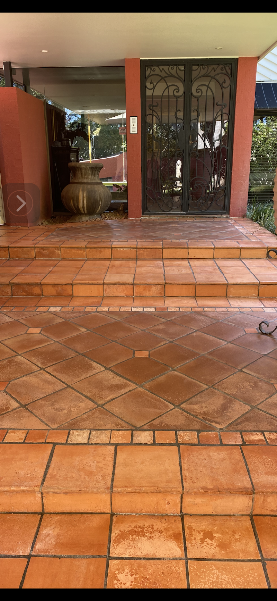
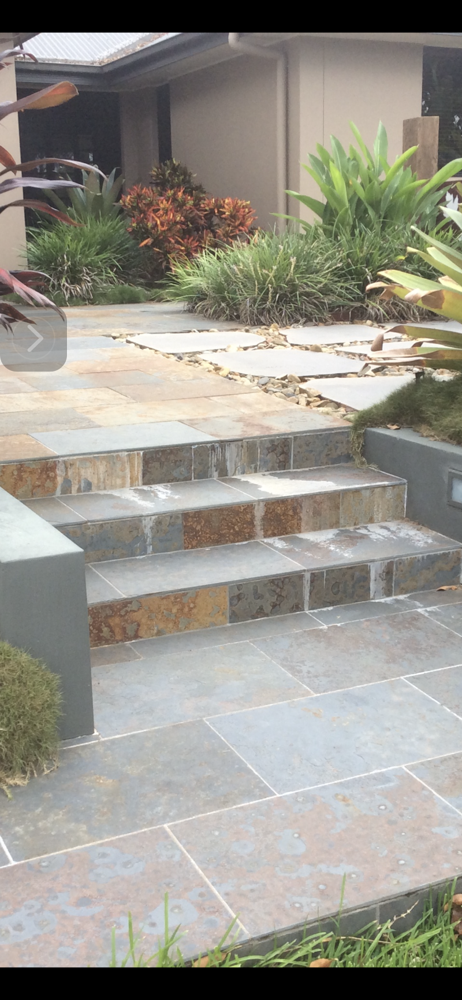
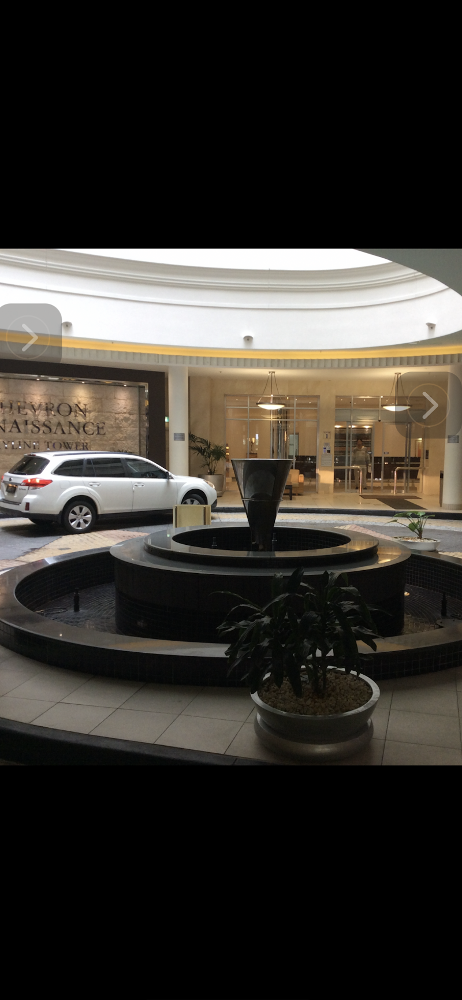

Your Tiles Restored, Not Replaced
Gold Coast's tile and stone restoration specialist. 35 years of bringing floors back to life.
""Cliff and his team are the true blue experts in this field. It has truly been remarkable what he and his team have done to our floors that are over 40+ years old." Peter Bennett"

What's the problem?
Pick your issue and find out what's involved before you call.
Grinding, honing, and polishing
Cliff restores natural stone to its original shine using professional diamond grinding and polishing equipment.
Deep cleaning and resealing
Strip old sealant, deep clean grout lines, apply fresh sealer. Transforms the entire floor without replacing a single tile.
Stripping and rectification
Previous coatings stripped back to bare stone or tile, then the correct product applied for a lasting finish.
On-site repair and polishing
Scratches ground out and polished smooth. No need to replace the whole floor for localised damage.
Why Gold Coast Chooses Cliff
35 years of restoring floors other companies say need replacing.

No Harsh Chemicals
Kim VDK mentioned Cliff uses no harsh chemicals, unlike other companies. Safe for your home, your pets, your family.

40+ Year Old Floors Saved
Peter Bennett's floors were over 40 years old. Cliff restored them to a standard that left him saying 'truly remarkable'.

Same Week Availability
Monday to Friday 7am start, Saturday mornings too. Cliff responds to quotes within 24 hours.

Full Process Explained Before Work Starts
Multiple customers highlight Cliff explaining the entire process before starting. No surprises on the invoice.
Three steps to your new tiles
Call
Book a free quote by calling 0418 730 021 or via WhatsApp.
Quote
Cliff measures up and gives you a fixed price quote.
Result
Professional tiling with warranty. As 40 happy customers confirm.
Google rating
Reviews
Years of experience
What we do
40 customers can't be wrong
"Cliff and his team are the true blue experts in this field. It has truly been remarkable what he and his team have done to our floors that are over 40+ years old. Cliff does not cut corners and always communicates, which is fantastic."
"Cliff has just restored our slate floor to its previous glory. It looks amazing. We are very happy with the result. He has also provided us with information on how to keep the slate tiles in this great condition."
"Can't thank Cliff and Scotty enough for an amazing clean and re-seal of my slate floors. Cliff was extremely knowledgeable and took the time to explain the whole process to me. No harsh chemicals were used unlike the other companies."
"Cliff and Scotty did a great clean, restore and polish of the slate tiles in my parents' home. Friendly, reliable and professional. The end result was the best we've ever seen the tiles."
"A big thank you to Cliff for his excellent work in the restoration of a slate floor badly scratched during the delivery of a new refrigerator. Very knowledgeable and reliable, completed the work to a high standard."